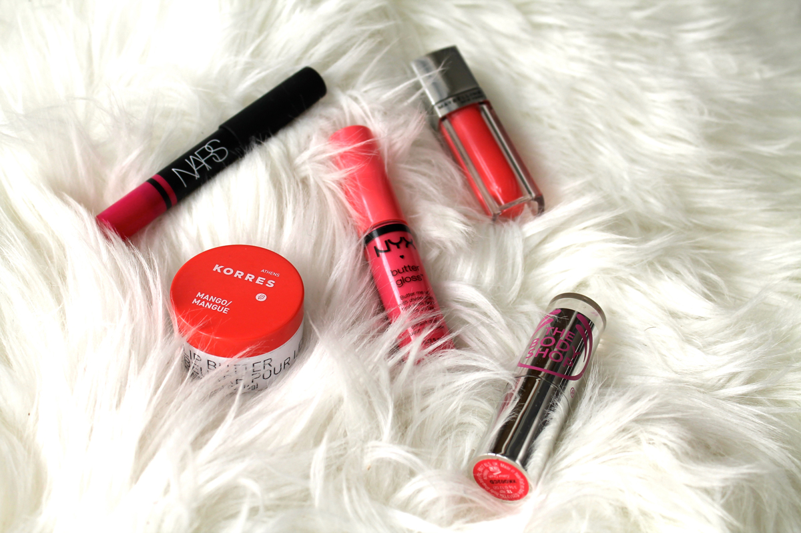
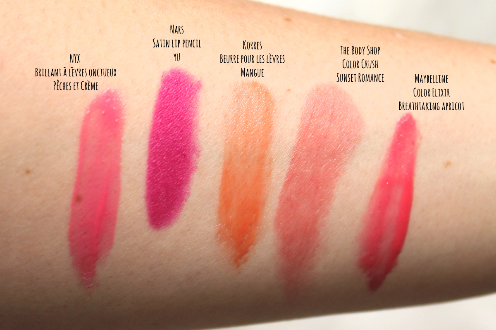

Top 5 : Lèvres pour le printemps

Les oiseaux gazouillent, les journées rallongent et le soleil se pointe le bout du nez. Le printemps (enfin!) s’installe tranquillement. C’est donc l’occasion parfaite pour troquer les rouges bourgognes, les roses framboises et les prunes de l’hiver pour des couleurs dignes du printemps! Corail, rosé et pêche sont désormais à l’honneur.
Brillant et éclatant
Pour des lèvres pulpeuses et en santé, mes 2 options préférées se ressemblent un peu (voir pas mal). Le brillant à lèvres onctueux de NYX dans la couleur “Pêches et Crème” donne du teint au visage avec une couleur pêche-rosé. Très confortable à porter, ce n’est pas un brillant à lèvres collant. Pour une brillance plus pêche-orange, le Color Elixir de Maybelline dans la couleur “Breathtaking Apricot” est hydratant et laisse une teinte pêche sur les lèvres quand la brillance disparait avec le temps.
Subtil et hydratant
Pour une couleur plus subtile mais printanière, le beurre pour les lèvres à la mangue de Korres est un vrai baume de couleur orange et il sent divinement bon. Pour avoir une bouche avec une douce teinte de corail, le rouge à lèvres Colour Crush de Body Shop dans la couleur “Sunset Romance” est parfait.
Vif et coloré
Rien de tel qu’un rose vif pour faire un impact. Avec un fini satiné er crémeux, le crayon “Yu" de Nars reste sur les lèvres longtemps sans devenir fade. Comme il est sous forme de crayon l’application est très facile pour avoir de belles lèvres bien définies et pimpantes!

Quels sont vos rouges à lèvres préférés que vous ressortez le printemps venu?